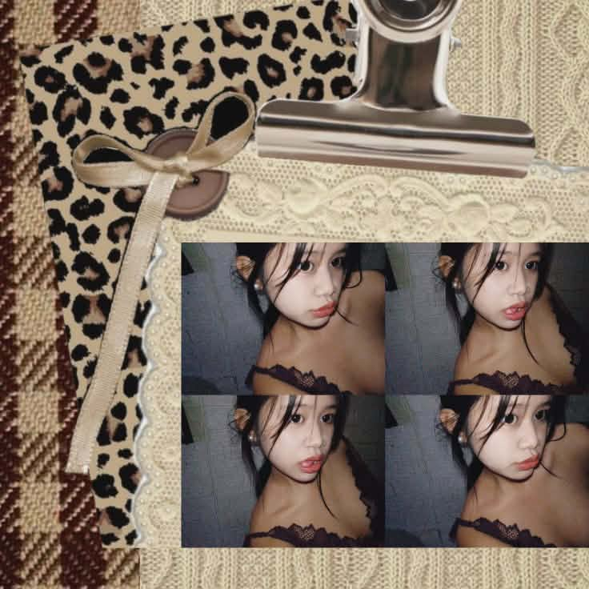
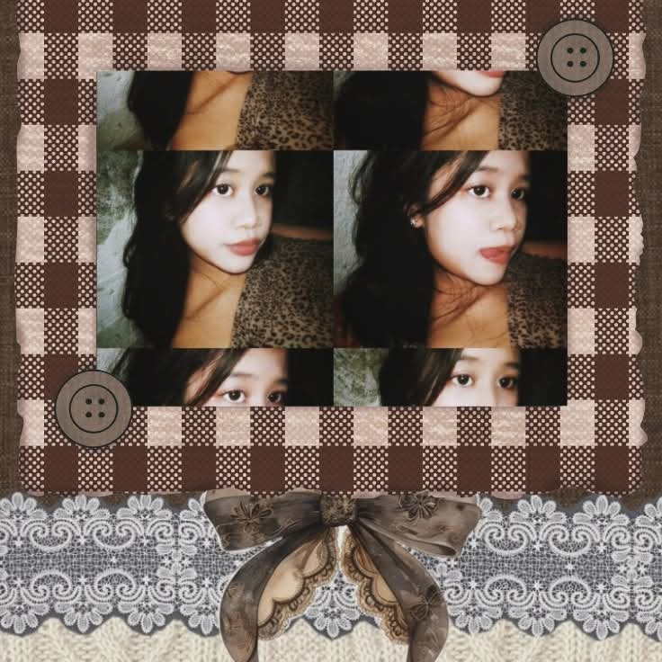
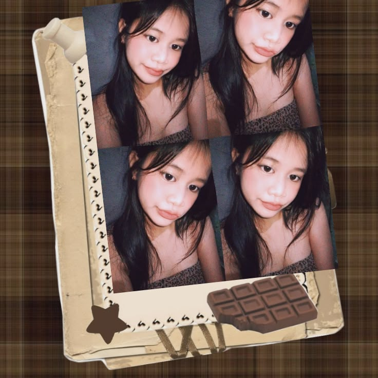
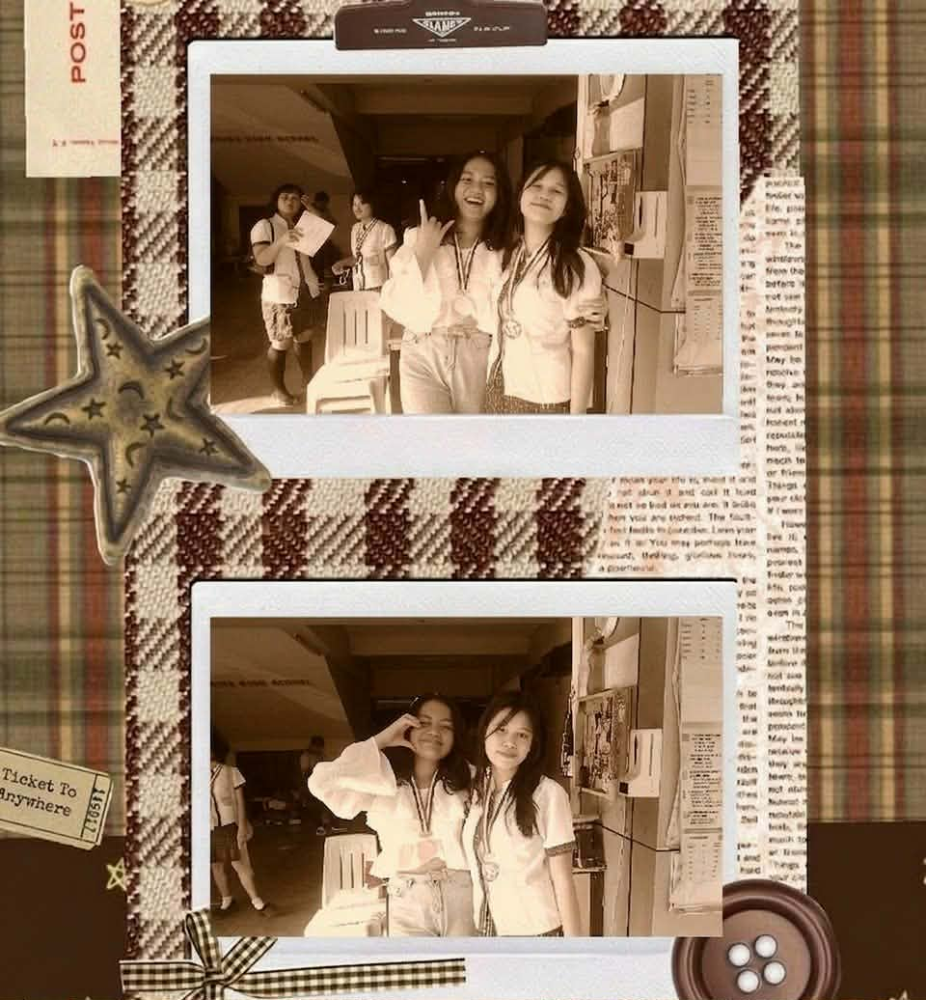

ME

Full Name: Danice Joy Vicencio Delapos
Nickname: Nisyang
Age: 18
Birthday: December 26, 2006
Zodiac Sign: Capricorn
MBTI Personality: INFJ
Nationality: Filipino
MY PICKS

Color: Wine Red
Music Band: The 1975
Animal: Parrot
Movie: The Notebook
Flower: Tulips
Snacks: Brownies
Season: Rainy
Drink: Matcha Latte
Dish: Chicken Alfredo
Place: Recuerdo
Scent: Warm Vanilla-Floral Fragnance (like Good Girl perfume)
Ice Cream: Chocolate Almond
Time of day: Late Evening
Shoes: Heels
Book: The Laws of Human Nature
Fruit: Avocado
TIME SPENT

Crafting is something I enjoy, especially using recycled materials. I like turning simple items into handmade crafts like decorative flowers, keychains, small flower pots, and tumbler holders. I find it satisfying to give old materials a new purpose.
I also enjoy fashion, especially sewing and making small DIY clothing pieces. Working with fabric lets me be creative through stitches, patterns, and small changes. Even simple ideas become something wearable, which makes the process challenging but rewarding.
Aside from these, I sometimes write poetry in Filipino. Writing poems allows me to put thoughts and emotions into words, especially the feelings that are often difficult to explain directly. Through poetry, I turn my thoughts, reflections, and quiet observations about life into words.
MY FRIEND

She is irreplaceable. We have been friends for almost two decades, and through all those years, she has come to know me in a way no one else ever has. She knows the version of me that I rarely show to other people, yet she never made me feel like I had to be someone different. With her, I don’t feel the need to pretend or hide anything, because she understands even the things I don’t say out loud.
I have never once felt like something was missing in me when she is around. Her presence alone makes everything feel complete, as if life has always been a little more whole with her in it. It’s like she fills spaces I didn’t even realize were empty, not by changing me, but by simply being there and staying.